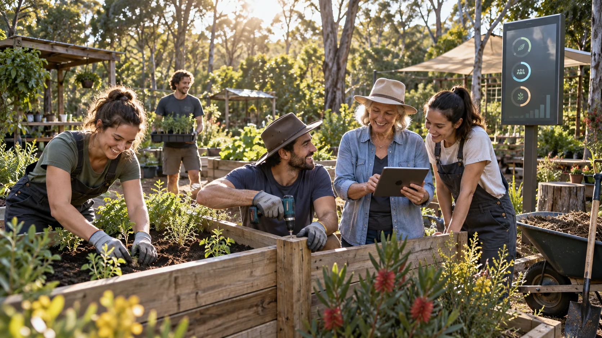
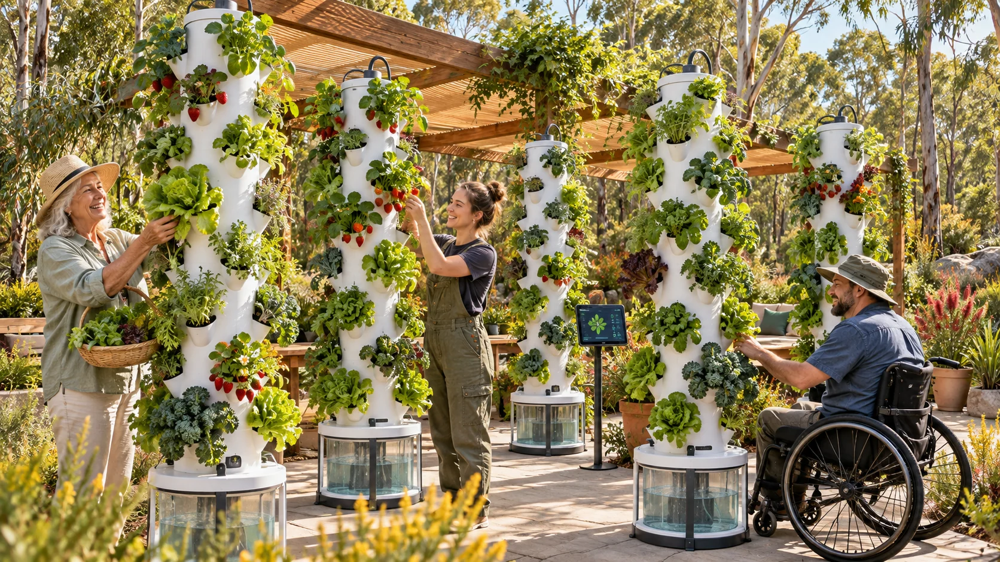
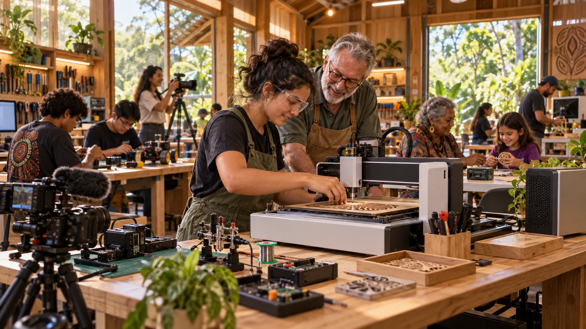

GenAI concept artworkC-hours: making contribution visible
A community grows stronger when people can see how their contribution matters. The proposed Straddie C-hour pilot would make volunteering easier to discover, more enjoyable to join and more visible across generations. One Community-Hour, or C-hour, would record one verified hour of freely chosen service.
A C-hour has no monetary equivalent, dollar exchange rate, cash-out value or investment value. Its purpose is to recognise contribution and support a culture of reciprocity.
Give young people a reason to join in
The pilot could begin with activities people already value: helping at events, sharing digital skills, recording authorised local stories, growing food, supporting neighbours and caring for places. I would invite young people to suggest activities and help design an experience they want to join.
Team challenges, learning milestones, creative projects and celebrations could bring some of the enjoyment of games into real community work. Progress would be visible: a garden growing, a film completed, an event made accessible, a neighbour gaining confidence with technology. People would have reasons to return because the work connects them to something and someone.
A community film project might spark an interest in sound production. The cooperative on page 9 could connect that interest with training or paid work.

Recognise what the community creates
Three distinct records would tell the story: money used, hours contributed and outcomes achieved. Ten hours of activity might produce a repaired garden or help several people use a digital tool. Keeping those records separate makes contribution visible while showing what the effort accomplished.
I invite participants and community hosts to explore meaningful non-monetary reciprocity, including shared learning and community opportunities. We could consider ways to welcome different abilities, caring responsibilities and available time. The pilot would recognise volunteering alongside care based on need and properly paid employment.

A specific legal pathway for the pilot
My published Submission No. 2 to the federal Inquiry into Local Government Funding and Fiscal Sustainability sets out the C-hour and community wealth policy foundations. [7]
For Minjerribah, I seek a specific legal carve-out and possibly a temporary tax exemption for a pilot without monetary equivalence. With Australian Taxation Office advice and engagement with Treasury and relevant ministers, we could define verification, recognition and associated opportunities, then assess participation, retention, skills and community benefit.
Straddie could show how thoughtful design turns volunteering into a shared adventure: useful service connected with friendship, capability and belonging.